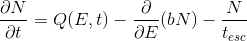

General info
GAMERA is a project launched by the Max Planck Institute for Nuclear Physics (MPIK),
aC++ library for modeling in high energy astrophysics. It is also
available as a swig-wrapped python module (which is internally called gappa).
Here is a list of what you can do with it:
- calculate the spectral evolution of a particle population in the presence of time-dependent or constant injection, energy losses and particle escape
- calculate the radiation spectrum from a parent particle population
- do these things in an object-oriented and modular way, allowing you to easily model multiple emission zones that can interact with each other
- access 3D Galactic gas, magnetic field and spiral arm models, as well as hydrodynamical Supernova Remnant models from accepted and peer reviewed publications
And here are some things that you can’t do directly with GAMERA at the moment:
- fitting. But you can still write your model with
GAMERAand use python packages for fitting, described in this tutorial - spatial evolution of particles. However, it is possible to approximate by using different zones of particles
How to use these features is shown in the tutorials section.
At the time of writing, python is quite popular and the tutorials on these pages
are provided in that language. However, you can use GAMERA also in your C++ program
by adapting the syntax, e.g. instead of the python code
fr = gappa.Radiation()
fr.SetBField(b)
[...]
sed = fr.GetTotalSED()
you could write in C++ syntax
Radiation *fRad = new Radiation();
fRad->SetBField(b);
[...]
vector< vector<double> > SED = fRad->GetTotalSED();
Please check out the installation instructions to learn how to make GAMERA work
in either language.
Particle evolution
The intention of GAMERA is to make the modeling of particle spectra in typical
scenarios relavant to gamma-ray astronomy as simple as possible.
The Particles class is designed to solve the following transport equation

where Q(E,t), the source term, is the spectrum of particles injected into a system, b=b(E,t) is the energy loss rate of these particles, tesc=tesc(E,t) is the time scale on which particle escape the system and N=N(E,t) is the total resulting particle spectrum in the system at a time t.
An example which is described by this equation could be a pulsar wind nebula (PWN) where the pulsar steadily injects a spectrum of accelerated electrons / positrons into the surrounding medium, where these particles suffer Synchrotron- and other losses over time.
If the energy loss rate and escape time scale are constant in time, b=b(E) and tesc=tesc(E), the differential equation can be solved analytically or semi-analytically. An excellent discussion of this solution can be found in Atoyan & Aharonian 1999.
If the losses and escape times are time-dependent, typically the equation can only be solved
numerically. The approach in GAMERA is to interpret the transport equation as an
advective flow in energy space and solve it using a donor-cell advection algorithm.
This method also allows for iterative models, because model parameters can be changed while the numerical method is running. This allows for example for the interaction between particles and their emitted radiation, or between multiple zones of particles.
Per default, the numerical method will be used. However, if the user is sure that energy losses are constant in time, the semi-analytical method can be applied, which in certain circumstances can be much faster. However, the latter does presently not support the treatment of particle escape.
The output of this class, namely particle spectra N(E,t), is in the right format
to be directly used in the Radiation class, so that radiation spectra can be calculated easily.
Radiation models
In GAMERA, radiation mechanisms are implemented for
- Electrons (including Positrons)
- Protons
- Arbitrary mix of hadronic species for both projectiles and target nuclei.
Supported gamma-ray production mechanisms:
for Electrons
- Synchrotron Emission
- isotropised pitch angle distribution of electrons (following Ghisellini et al. 1988)
- custom fixed pitch angles (see e.g. Blumenthal & Gould 1970)
- Bremsstrahlung
- Both electron-electron and electron-ion Bremsstrahlung (following Baring et al. 1999)
- Inverse-Compton Emission
- using the full Klein-Nishina cross-section (see e.g. Blumenthal & Gould 1970)
- allowing for arbitrary target field spectra
- supporting synchrotron-self-Compton(SSC) emission (using Atoyan & Aharonian 1996)
- anisotropic radiation fields for anisotropic electrons (following Moskalenko & Strong 2000)
- anisotropic radiation field for isotropic electrons (following Aharonian & Atoyan 1981)
for Hadrons
- π⁰- and η-Decay
- Following the parameterisation of Kafexhiu et al. 2014
Data Types
GAMERA uses doubles, vectors of doubles, vectors of double-tuples and 2D vectors of doubles.
- doubles (
double) are used as input / output when a single number is supplied / extracted, e.g. when the distance to a source is set or when the total energy of particles is extracted. - vectors of doubles (
vector<double>) are used for example when you want to calculate the radiation spectrum at a series of specific points in energy, which are supplied in this format. If you generate a string of random numbers with theUtils-class, you can specify the number of random numbers you want to dice and it will return you the result as a 1D-vector of doubles - vectors of double-tuples (
vector< vector<double> >) are frequently used when a function or lookup is provided / extracted, for example- SEDs and spectra are 2D vectors holding tuples of (energy,flux)
- the time dependency of the source size is supplied in form of a vector of tuples (time,size)
- the energy dependency of the particle escape term can be provided in the format of (energy, escape_time)
- 2D vectors of doubles (
vector< vector<double> >) consisting of longer vectors are used e.g. for- probability density surfaces in random number generation
- time-and energy dependent shapes of particle escape of injection spectra
If you use python and numpy, you can conveniently cast the GAMERA output
into numpy-arrays for further manipulation. Also, GAMERA accepts numpy-arrays
as input. In particular, numpy.meshgrid can be used as input for the last bullet point
in the above list.
Units
Units in GAMERA are mostly in cgs, with several exceptions that are meaningful
in the astrophysical context.
- times are in years, except for particle escape time scales
- lengths are in parsecs
- when retrieving SEDs, for convenience the units are
- erg / s / cm2 vs TeV for radiation flux SEDs
- erg / s vs. TeV for luminosity SEDs (i.e. when the distance to the source is not set)
- erg vs. TeV for particle SEDs
(differential spectra are again in cgs units)
- gas densities are in number densities.
Also, the units of the spectrum will impact the unit of the calculated radiation spectra. For instance, if the unit of the particle spectrum is only differential in energy, i.e. 1/erg, the output radiation spectra will have the unit of a flux if a source distance is specified (see below) or differential photon count per energy and time if not.
On the other hand, if the input unit is differential also in volume, i.e. 1/erg/cm3, then also the output radiation spectrum will be. Therefore, if no distance is specified in this case, a volume photon emissivity will be calculated, i.e. d3N/dEdVdt.
Libraries
GAMERA uses
- the
C++Standard Library, mainly for output stream and vectors GSLfor interpolation, integration and random number generation